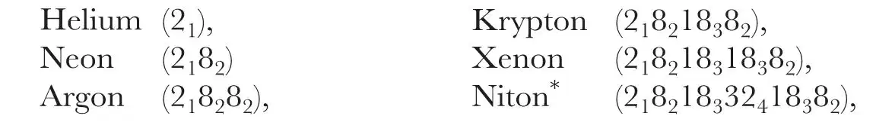

中文
中文N. Bohr
Editor’s Note
Here Danish physicist Niels Bohr ponders the possibility of explaining atomic properties on the basis of the new quantum theory. Physicists had conjectured about how the grouping of elements in the periodic table might reflect specific patterns of electrons arranged around the nucleus, yet without explaining how such patterns arise. As Bohr notes, his model of the hydrogen atom suggested that electrons may fall into distinct shells. Much of the periodic table, says Bohr, can be understood as the successive filling of these shells. The stability of filled shells would explain the chemical inactivity of inert gases such as helium and argon. Bohr’s model was supplanted by a more mathematically rigorous quantum theory, yet much of his qualitative picture remains intact today. 中文
IN a letter to Nature of November 25 last Dr. Norman Campbell discusses the problem of the possible consistency of the assumptions about the motion and arrangement of electrons in the atom underlying the interpretation of the series spectra of the elements based on the application of the quantum theory to the nuclear theory of atomic structure, and the apparently widely different assumptions which have been introduced in various recent attempts to develop a theory of atomic constitution capable of accounting for other physical and chemical properties of the elements. Dr. Campbell puts forward the interesting suggestion that the apparent inconsistency under consideration may not be real, but rather appear as a consequence of the formal character of the principles of the quantum theory, which might involve that the pictures of atomic constitution used in explanations of different phenomena may have a totally different aspect, and nevertheless refer to the same reality. In this connection he directs attention especially to the so-called “principle of correspondence”, by the establishment of which it has been possible—notwithstanding the fundamental difference between the ordinary theory of electromagnetic radiation and the ideas of the quantum theory—to complete certain deductions based on the quantum theory by other deductions based on the classical theory of radiation. 中文
In so far as it must be confessed that we do not possess a complete theory which enables us to describe in detail the mechanism of emission and absorption of radiation by atomic systems, I naturally agree that the principle of correspondence, like all other notions of the quantum theory, is of a somewhat formal character. But, on the other hand, the fact that it has been possible to establish an intimate connection between the spectrum emitted by an atomic system—deduced according to the quantum theory on the assumption of a certain type of motion of the particles of the atom—and the constitution of the radiation, which, according to the ordinary theory of electromagnetism, would result from the same type of motion, appears to me do afford an argument in favour of the reality of the assumptions of the spectral theory of a kind scarcely compatible with Dr. Campbell’s suggestion. On the contrary, if we admit the soundness of the quantum theory of spectra, the principle of correspondence would seem to afford perhaps the strongest inducement to seek an interpretation of the other physical and chemical properties of the elements on the same lines as the interpretation of their series spectra; and in this letter I should like briefly to indicate how it seems possible by an extended use of this principle to overcome certain fundamental difficulties hitherto involved in the attempts to develop a general theory of atomic constitution based on the application of the quantum theory to the nucleus atom. 中文
The common character of theories of atomic constitution has been the endeavour to find configurations and motions of the electrons which would seem to offer an interpretation of the variations of the chemical properties of the elements with the atomic number as they are so clearly exhibited in the well-known periodic law. A consideration of this law leads directly to the view that the electrons in the atom are arranged in distinctly separate groups, each containing a number of electrons equal to one of the periods in the sequence of the elements, arranged according to increasing atomic number. In the first attempts to obtain a definite picture of the configuration and motion of the electrons in these groups it was assumed that the electrons within each group at any moment were placed at equal angular intervals on a circular orbit with the nucleus at the centre, while in later theories this simple assumption has been replaced by the assumptions that the configurations of electrons within the various groups do not possess such simple axial symmetry, but exhibit a higher degree of symmetry in space, it being assumed, for instance, that the configuration of the electrons at any moment during their motions possesses polyhedral symmetry. All such theories involve, however, the fundamental difficulty that no interpretation is given why these configurations actually appear during the formation of the atom through a process of binding of the electrons by the nucleus, and why the constitution of the atom is essentially stable in the sense that the original configuration is reorganized if it be temporarily disturbed by external agencies. If we reckon with no other forces between the particles except the attraction and repulsion due to their electric charges, such an interpretation claims clearly that there must exist an intimate interaction or “coupling” between the various groups of electrons in the atom which is essentially different from that which might be expected if the electrons in different groups are assumed to move in orbits quite outside each other in such a way that each group may be said to form a “shell” of the atom, the effect of which on the constitution of the outer shells would arise mainly from the compensation of a part of the attraction from the nucleus due to the charge of the electrons. 中文
These considerations are seen to refer to essential features of the nucleus atom, and so far to have no special relation to the character of the quantum theory, which was originally introduced in atomic problems in the hope of obtaining a rational interpretation of the stability of the atom. According to this theory an atomic system possesses a number of distinctive states, the co-called “stationary states”, in which the motion can be described by ordinary mechanics, and in which the atom can exist, at any rate for a time, without emission of energy radiation. The characteristic radiation from the atom is emitted only during a transition between two such states, and this process of transition cannot be described by ordinary mechanics, any more than the character of the emitted radiation can be calculated from the motion by the ordinary theory of electro-magnetism, it being, in striking contrast to this theory, assumed that the transition is always followed by an emission of monochromatic radiation the frequency of which is determined simply from the difference of energy in the two states. The application of the quantum theory to atomic problems—which took its starting point from the interpretation of the simple spectrum of hydrogen, for which no a priori fixation of the stationary states of the atoms was needed—has in recent years been largely extended by the development of systematic methods for fixing the stationary states corresponding to certain general classes of mechanical motions. While in this way a detailed interpretation of spectroscopic results of a very different kind has been obtained, so far as phenomena which depend essentially on the motion of one electron in the atom were concerned, no definite elucidation has been obtained with regard to the constitution of atoms containing several electrons, due to the circumstance that the methods of fixing stationary states were not able to remove the arbitrariness in the choice of the number and configurations of the electrons in the various groups, or shells, of the atom. In fact, the only immediate consequence to which they lead is that the motion of every electron in the atom will on a first approximation correspond to one of the stationary states of a system consisting of a particle moving in a central field of force, which in their limit are represented by the various circular or elliptical stationary orbits which appear in Sommerfeld’s theory of the fine structure of the hydrogen lines. A way to remove the arbitrariness in question is opened, however, by the introduction of the correspondence principle, which gives expression to the tendency in the quantum theory to see not merely a set of formal rules for fixing the stationary states of atomic systems and the frequency of the radiation emitted by the transitions between these states, but rather an attempt to obtain a rational generalization of the electromagnetic theory of radiation which exhibits the discontinuous character necessary to account for the essential stability of atoms. 中文
Without entering here on a detailed formulation of the correspondence principle, it may be sufficient for the present purpose to say that it establishes an intimate connection between the character of the motion in the stationary states of an atomic system and the possibility of a transition between two of these states, and therefore offers a basis for a theoretical examination of the process which may be expected to take place during the formation and reorganisation of an atom. For instance, we are led by this principle directly to the conclusion that we cannot expect in actual atoms configurations of the type in which the electrons within each group are arranged in rings or configurations of polyhedral symmetry, because the formation of such configurations would claim that all the electrons within each group should be originally bound by the atom at the same time. On the contrary, it seems necessary to seek the configurations of the electrons in the atoms among such configurations as may be formed by the successive binding of the electrons one by one, a process the last stages of which we may assume to witness in the emission of the series spectra of the elements. Now on the correspondence principle we are actually led to a picture of such a process which not only affords a detailed insight into the structure of these spectra, but also suggests a definite arrangement of the electrons in the atom of a type which seems suitable to interpret the high-frequency spectra and the chemical properties of the elements. Thus from a consideration of the possible transitions between stationary states, corresponding to the various steps of the binding of each of the electrons, we are led in the first place to assume that only the two first electrons move in what may be called one-quantum orbits, which are analogous to that stationary state of a central system which corresponds to the normal state of a system consisting of one electron rotating round a nucleus. The electrons bound after the first two will not be able by a transition between two stationary states to procure a position in the atom equivalent to that of these two electrons, but will move in what may be called multiple-quanta orbits, which correspond to other stationary states of a central system. 中文
The assumption of the presence in the normal state of the atom of such multiple-quanta orbits has already been introduced in various recent theories, as, for instance, in Sommerfeld’s work on the high-frequency spectra and in that of Landé on atomic dimensions and crystal structure; but the application of the correspondence principle seems to offer for the first time a rational theoretical basis for these conclusions and for the discussion of the arrangement of the orbits of the electrons bound after the first two. Thus by means of a closer examination of the progress of the binding process this principle offers a simple argument for concluding that these electrons are arranged in groups in a way which reflects the periods exhibited by the chemical properties of the elements within the sequence of increasing atomic numbers. In fact, if we consider the binding of a large number of electrons by a nucleus of high positive charge, this argument suggests that after the first two electrons are bound in one-quantum orbits, the next eight electrons will be bound in two-quanta orbits, the next eighteen in three-quanta orbits, and the next thirty-two in four-quanta orbits. 中文
Although the arrangements of the orbits of the electrons within these groups will exhibit a remarkable degree of spatial symmetry, the groups cannot be said to form simple shells in the sense in which this expression is generally used as regards atomic constitution. In the first place, the argument involves that the electrons within each group do not all play equivalent parts, but are divided into sub-groups corresponding to the different types of multiple-quanta orbits of the same total number of quanta, which represents the various stationary states of an electron moving in a central field. Thus, corresponding to the fact that in such a system there exist two types of two-quanta orbits, three types of three-quanta orbits, and so on, we are led to the view that the above-mentioned group of eight electrons consists of two sub-groups of four electrons each, the group of eighteen electrons of three sub-groups of six electrons each, and the group of thirty-two electrons of four sub-groups of eight electrons each. 中文
Another essential feature of the constitution described lies in the configuration of the orbits of the electrons in the different groups relative to each other. Thus for each group the electrons within certain sub-groups will penetrate during their revolution into regions which are closer to the nucleus than the mean distances of the electrons belonging to groups of fewer-quanta orbits. This circumstance, which is intimately connected with the essential features of the processes of successive binding, gives just that expression for the “coupling” between the different groups which is a necessary condition for the stability of atomic configurations. In fact, this coupling is the predominant feature of the whole picture, and is to be taken as a guide for the interpretation of all details as regards the formation of the different groups and their various sub-groups. Further, the stability of the whole configuration is of such a character that if any one of the electrons is removed from the atom by external agencies not only may the previous configuration be reorganised by a successive displacement of the electrons within the sequence in which they were originally bound by the atom, but also the place of the removed electron may be taken by any one of the electrons belonging to more loosely bound groups or sub-groups through a process of direct transition between two stationary states, accompanied by an emission of a monochromatic radiation. This circumstance—which offers a basis for a detailed interpretation of the characteristic structure of the high-frequency spectra of the elements—is intimately connected with the fact that the electrons in the various sub-groups, although they may be said to play equivalent parts in the harmony of the inter-atomic motions, are not at every moment arranged in configurations of simple axial or polyhedral symmetry as in Sommerfeld’s or Landé’s work, but that their motions are, on the contrary, linked to each other in such a way that it is possible to remove any one of the electrons from the group by a process whereby the orbits of the remaining electrons are altered in a continuous manner. 中文
These general remarks apply to the constitution and stability of all the groups of electrons in the atom. On the other hand, the simple variations indicated above of the number of electrons in the groups and sub-groups of successive shells hold only for that region in the atom where the attraction from the nucleus compared with the repulsion from the electrons possesses a preponderant influence on the motion of each electron. As regards the arrangements of the electrons bound by the atom at a moment when the charges of the previously bound electrons begin to compensate the greater part of the positive charge of the nucleus, we meet with new features, and a consideration of the conditions for the binding process forces us to assume that new, added electrons are bound in orbits of a number of quanta equal to, or fewer than, that of the electrons in groups previously bound, although during the greater part of their revolution they will move outside the electrons in these groups. Such a stop in the increase, or even decrease, in the number of quanta characterising the orbits corresponding to the motion of the electrons in successive shells takes place, in general, when somewhat more than half the total number of electrons is bound. During the progress of the binding process the electrons will at first still be arranged in groups of the indicated constitution, so that groups of three-quanta orbits will again contain eighteen electrons and those of two-quanta orbits eight electrons. In the neutral atom, however, the electrons bound last and most loosely will, in general, not be able to arrange themselves in such a regular way. In fact, on the surface of the atom we meet with groups of the described constitution only in the elements which belong to the family of inactive gases, the members of which from many points of view have also been acknowledged to be a sort of landmark within the natural system of the elements. For the atoms of these elements we must expect the constitutions indicated by the following symbols:

* “Niton” was the provisional name in 1921 for the radioactive gas now called “radon”.
where the large figures denote the number of electrons in the groups starting from the innermost one, and the small figures the total number of quanta characterising the orbits of electrons within each group. 中文
These configurations are distinguished by an inherent stability in the sense that it is especially difficult to remove any of the electrons from such atoms so as to form positive ions, and that there will be no tendency for an electron to attach itself to the atom and to form a negative ion. The first effect is due to the large number of electrons in the outermost group; hence the attraction from the nucleus is not compensated to the same extent as in configurations where the outer group consists only of a few electrons, as is the case in those families of elements which in the periodic table follow immediately after the elements of the family of the inactive gases, and, as is well known, possess a distinct electro-positive character. The second effect is due to the regular constitution of the outermost group, which prevents a new electron from entering as a further member of this group. In the elements belonging to the families which in the periodic table precede the family of the inactive gases we meet in the neutral atom with configurations of the outermost group of electrons which, on the other hand, exhibit a great tendency to complete themselves by the binding of further electrons, resulting in the formation of negative ions. 中文
The general lines of the latter considerations are known from various recent theories of atomic constitution, such as those of A. Kossel and G. Lewis, based on a systematic discussion of chemical evidence. In these theories the electro-positive and electro-negative characters of these families in the periodic table are interpreted by the assumption that the outer electrons in the atoms of the inactive gases are arranged in especially regular and stable configurations, without, however, any attempt to give a detailed picture of the constitution and formation of these groups. In this connection it may be of interest to direct attention to the fundamental difference between the picture of atomic constitution indicated in this letter and that developed by Langmuir on the basis of the assumption of stationary or oscillating electrons in the atom, referred to in Dr. Campbell’s letter. Quite apart from the fact that in Langmuir’s theory the stability of the configuration of the electrons is considered rather as a postulated property of the atom, for which no detailed a priori interpretation is offered, this difference discloses itself clearly by the fact that in Langmuir’s theory a constitution of the atoms of the inactive gases is assumed in which the number of electrons is always largest in the outermost shell. Thus the sequence of the number of electrons within the groups of a niton atom is, instead of that indicated above, assumed to be 2, 8, 18, 18, 32, such as the appearance of the periods in the sequence of the elements might seem to claim at first sight. 中文
The assumption of the presence of the larger groups in the interior of the atom, which is an immediate consequence of the argument underlying the present theory, appears, however, to offer not merely a more suitable basis for the interpretation of the general properties of the elements, but especially an immediate interpretation of the appearance of such families of elements within the periodic table, where the chemical properties of successive elements differ only very slightly from each other. The existence of such families appears, in fact, as a direct consequence of the formation of groups containing a larger number of electrons in the interior of the atom when proceeding through the sequence of the elements. Thus in the family of the rare earths we may be assumed to be witnessing the successive formation of an inner group of thirty-two electrons at that place in the atom where formerly the corresponding group possessed only eighteen electrons. In a similar way we may suppose the appearance of the iron, palladium, and platinum families to be witnessing stages of the formation of groups of eighteen electrons. Compared with the appearance of the family of the rare earths, however, the conditions are here somewhat more complicated, because we have to do with the formation of a group which lies closer to the surface of the atom, and where, therefore, the rapid increase in the compensation of the nuclear charge during the progress of the binding process plays a greater part. In fact, we have to do in the cases in question, not, as in the rare earths, with a transformation which in its effects keeps inside one and the same group, and where, therefore, the increase in the number in this group is simply reflected in the number of the elements within the family under consideration, but we are witnesses of a transformation which is accompanied by a confluence of several outer groups of electrons. 中文
In a fuller account which will be published soon the questions here discussed will be treated in greater detail. In this letter it is my intention only to direct attention to the possibilities which the elaboration of the principles underlying the spectral applications of the quantum theory seems to open for the interpretation of other properties of the elements. In this connection I should also like to mention that it seems possible, from the examination of the change of the spectra of the elements in the presence of magnetic fields, to develop an argument which promises to throw light on the difficulties which have hitherto been involved in the explanation of the characteristic magnetic properties of the elements, and have been discussed in various recent letters in Nature. 中文
(107, 104-107; 1921)
N. Bohr: Copenhagen, February 14.